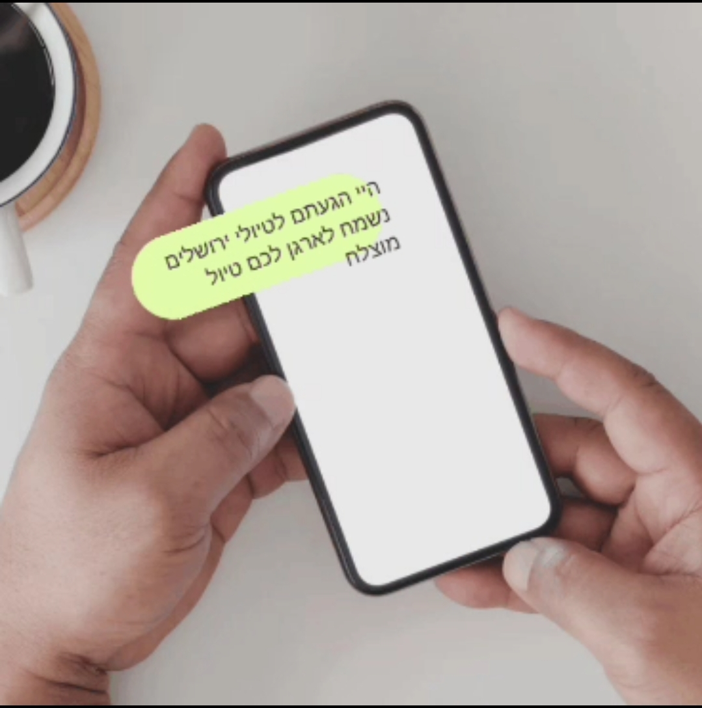

טיולי ירושלים היא חברה המתמחה בסיורים מודרכים, אבטחה רפואית, ליווי ותכנון טיולים בכל רחבי ישראל. אנו משלבים ניסיון רב שנים בשטח, היכרות עמוקה עם הארץ, שירות אישי ומקצועי, וגמישות מלאה לצרכים של כל לקוח.
בין אם אתם משפחה, קבוצה, ארגון, מוסד חינוכי או תיירים מחו"ל – אנחנו כאן כדי לבנות עבורכם חוויית טיול מושלמת, בטוחה, מרגשת ומותאמת אישית.
אחד התחומים המרכזיים בהם טיולי ירושלים מתמחה הוא שילוב אבטחה רפואית ושירותי Medical & Security בטיולים. אנו מבינים שטיול טוב הוא טיול בטוח, ולכן מציעים מעטפת מלאה של שירותי אבטחה רפואית בשטח.
ניתן לשלב בטיולים:
שירותי האבטחה הרפואית שלנו מותאמים במיוחד לקבוצות, ארגונים, מוסדות חינוך, טיולי שטח, טיולי לילה, טיולים במדבר, מסלולים מאתגרים ועוד.
מעבר לסיורים מודרכים, טיולי ירושלים מספקת שירותי לוגיסטיקה והפקות שטח ברמה גבוהה. אנו מלווים אתכם משלב הרעיון ועד לסיום הטיול, ודואגים לכל הפרטים הקטנים.
כל טיול נבנה באופן אישי, תוך הקשבה מלאה לצרכים שלכם, לתקציב, לזמנים ולמטרות הטיול.
כן, יש התאמה אישית מלאה לכל לקוח וקבוצה, כולל בניית מסלול לפי תחומי עניין, רמת קושי וזמן.
כן, ניתן לשלב חובשים, פאראמדיקים ואבטחה רפואית מלאה לפי הצורך וסוג הטיול.
ירושלים, ים המלח, מצדה, תל אביב, אילת, צפון הארץ, הנגב ואזורים נוספים בישראל.
כן, קיימת אפשרות לטיולים פרטיים, משפחות, קבוצות, ארגונים ומוסדות.
בהחלט. אנו מציעים סיורים מודרכים גם באנגלית ושפות נוספות, כולל ליווי מלא מרגע הנחיתה.
"אחלה שירות, מקצועי מאוד. הרגשנו בטוחים ומלווים לאורך כל הדרך."
"חוויה מעולה לכל המשפחה. המסלול היה מותאם לילדים וההדרכה הייתה מרתקת."
"יחס אישי, שירות מצוין והכל ברמה גבוהה. ממליצים בחום על טיולי ירושלים."
טיולי ירושלים מספקים שירותי הדרכה, אבטחה, ליווי ותכנון טיולים במגוון אזורים ברחבי ישראל. אנו מתאימים את המסלול לאזור, לעונה ולסוג הקבוצה.
סיורים בעיר העתיקה, הכותל, שוק מחנה יהודה, אתרי מורשת ומסלולים מיוחדים.
טיולי טבע, מסלולי שטח, תצפיות, מעיינות ואטרקציות באזור הנמוך בעולם.
סיורי מורשת, זריחות, מסלולי שטח מודרכים וחיבור לסיפור ההיסטורי המרגש.
סיורים עירוניים, קולינריה, טיילת, אתרי תרבות ושכונות מיוחדות.
טיולי מדבר, נוף, טיולי משפחות, מסלולי שטח ואטרקציות ימיות.
הכותל, העיר העתיקה, שוק מחנה יהודה ונקודות תצפית מרהיבות על העיר.
טיול זריחה, מסלולי טבע, תצפיות וחוויית ים המלח הייחודית.
מדבר, נוף, טיולי משפחות, מסלולי שטח ואטרקציות לכל הגילאים.
יש הרבה חברות טיולים בישראל, אבל טיולי ירושלים משלבת בין מקצועיות, ניסיון, שירות אישי ואהבה אמיתית לשטח.
להזמנה, תיאום טיול והצעת מחיר מותאמת אישית:
אפשר גם לפנות ישירות בוואטסאפ או בטלפון:
WhatsApp: 050-325-1251


